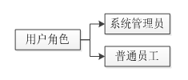

1.1.2 用户权限
该软件提供两类系统用户角色，在成为系统用户后，可以针对所要工作的项目被赋予两种项目用户身份。

用户角色图
用户身份图
系统管理员拥有最高级别系统访问权限。系统管理员可以操作所有系统功能，包括设备管理、用户管理、日志管理、项目管理（新增项目）等。
普通员工所拥有的权限小于系统管理员。普通员工初始创建时只拥有真机调试的功能权限。
不论是系统管理员还是普通员工，只有被赋予关联于某项目的用户身份后，才能拥有针对所属项目的功能操作权限：
1) 项目管理员能操作真机调试和所属项目的功能（监控台、版本、运行包、成员、创建任务和查看报告）。
2) 项目成员能操作真机调试和部分所属项目的功能（监控台、版本、运行包、创建任务和查看报告）。